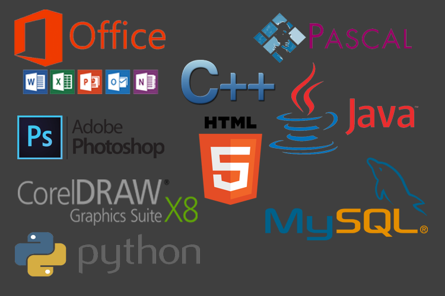

CV
Profile
| Nama | : | Hasbi Muhammad |
| TTL | : | Bandung, 29 Januari 1998 |
| Alamat | : | Jl. Pamekar Timur IV No.7 Komp. Panghegar Permai , Bandung 40613 |
| |
| Jenis Kelamin | : | Laki-Laki |
| Agama | : | ISLAM |
| Status | : | Mahasiswa |
| Kewarganegaraan | : | WNI |
| Hobi | : | Futsal |
Pendidikan
2003-2009 : SDN Panghegar Bandung
2009-2012 : SMP Negeri 16 Bandung
2012-2015 : SMK Informatika Bandung, Jurusan Teknik Komputer Jaringan
2015-Sekarang : Institut Teknologi Nasional Bandung, Jurusan Teknik Informatika
Prestasi Akademik
- Peringkat 3 Besar Semester I-VI di SMK Informatika Bandung, Jurusan Teknik Komputer Jaringan
- Perwakilan Jurusan Teknik Komputer Jaringan SMK Informatika Bandung, Pada lomba Networking di Widyatama Informatics Festival 2014
- Lulusan terbaik ke-2, Jurusan Teknik Komputer Jaringan di SMK Informatika Bandung
- Meraih Beasiswa Pada tingkat III di Jurusan Teknik Informatika, Institut Teknologi Nasional Bandung
Organisasi
- Anggota Karang Taruna RW 03 Kel.Mekar Mulya Kec.Panyileukan
- Himpunan Mahasiswa Teknik Informatika, ITENAS
- 2015-2016 : Anggota Himpunan
- 2016-Sekarang : Staff Badan Pengurus Himpunan
Skill
